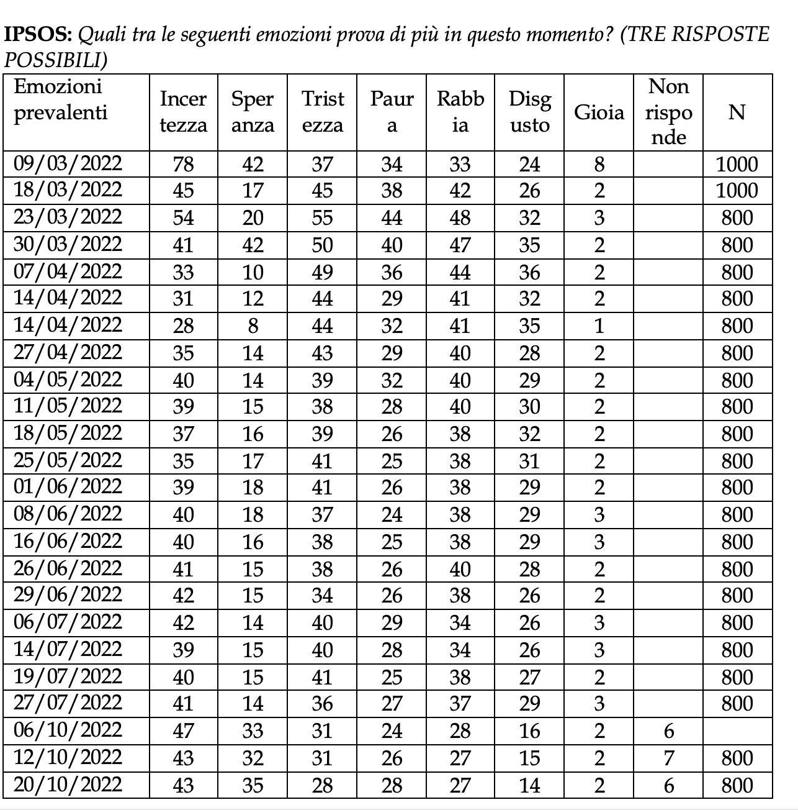
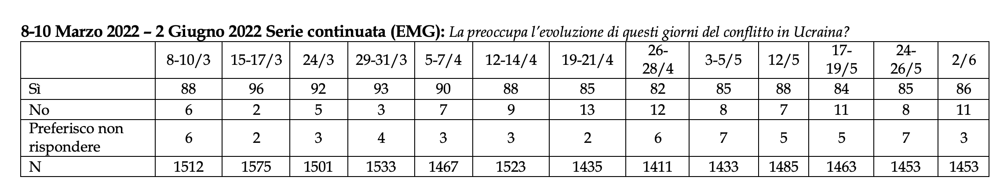
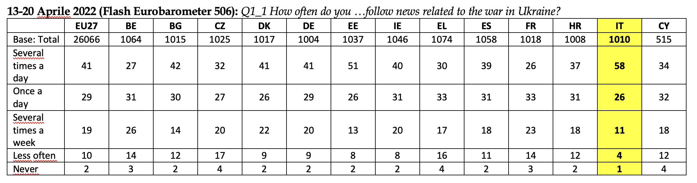
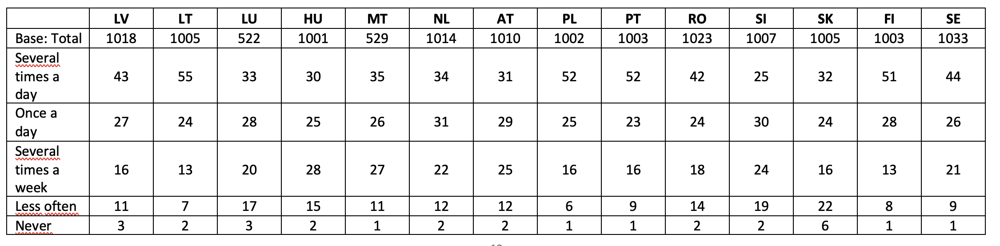
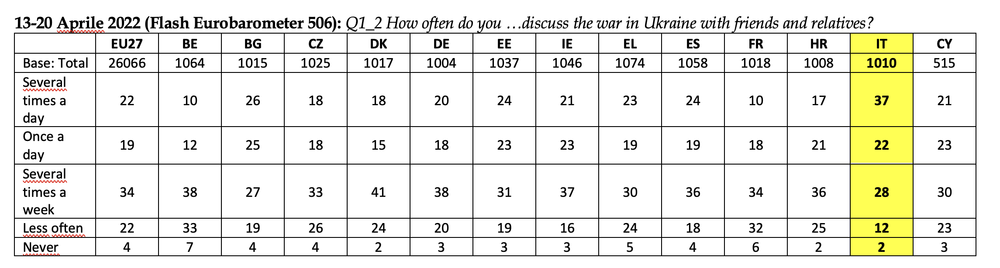
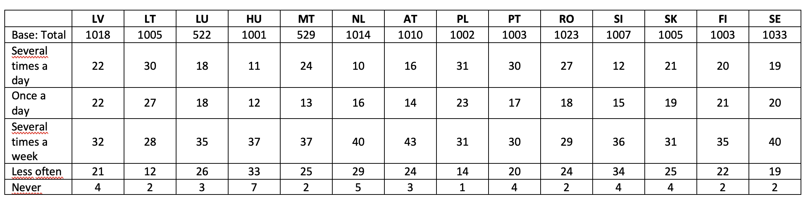

APPENDICE
MIP – MOST IMPORTANT PROBLEM
14 febbraio 2022 (EMG): Quali sono le vostre maggiori preoccupazioni per le prossime settimane? (possibili più risposte, max 2)
| % | |
|---|---|
| Il caro bollette e l’inflazione | 60 |
| La tensione tra Russia e Ucraina | 39 |
| Una recrudescenza della pandemia | 30 |
| Il lavoro | 20 |
| Preferisco non rispondere | 9 |
| L’instabilità politica | 8 |
| Altro | 1 |
| N | 1582 |
8 aprile 2022 (Euromedia Research): Qual è, secondo Lei, la priorità su cui dovrebbe concentrarsi il Governo da qui al 2023?
| % | |
|---|---|
| Ripresa economica nazionale | 17 |
| Lavoro e disoccupazione | 14 |
| Occuparsi del carovita per i cittadini maggiormente in difficoltà/Inflazione generale | 13 |
| Caro bollette | 13 |
| Risistemazione della Sanità: maggiore presidio territoriale, più medici e addetti sanitari | 8 |
| Una rivoluzione fiscale che vada incontro alle famiglie | 8 |
| Gestione dei profughi, dell’immigrazione, dei flussi migratori | 3 |
| Avere un ruolo più incisivo nel conflitto Ucraina / Russia | 3 |
| Un’attenzione speciale con maggiori investimenti a quella che viene definita rivoluzione digitale | 3 |
| Contrasto al covid | 2 |
| Una nuova riforma della giustizia | 2 |
| Una nuova legge elettorale | 2 |
| Nuovi investimenti per la scuola | 1 |
| Una velocizzazione e sistemazione della PA | 1 |
| Un’ampia riforma dei partiti politici | 1 |
| Altro | 3 |
| Non sa/Non risponde | 4 |
| N | 1000 |
11-12 aprile 2022 (DEMOPOLIS): Dopo 50 giorni di guerra tra Russia e Ucraina, quali sono le sue preoccupazioni?
| % | |
|---|---|
| Incremento delle bollette di gas ed energia | 81 |
| Costo dei carburanti (benzina e gasolio) | 70 |
| Aumento dei prezzi della spesa alimentare e dei beni di prima necessità | 67 |
| Crescita dell’inflazione con la riduzione del potere d’acquisto familiare | 56 |
| Indicazioni superiori al | 50 |
| Non sa | 3 |
| N | 1500 |
19 aprile – 16 maggio 2022 (Special Eurobarometer 526 (EB97.3)): QC1.5. In your opinion, how important are the following challenges to the internal security of the EU? War in the EU’s neighbourhood
| UE27 | IT | |
|---|---|---|
| Very important | 65 | 58 |
| Fairly important | 28 | 33 |
| Not very important | 4 | 6 |
| Not at all important | 1 | 2 |
| Don’t know | 2 | 1 |
| Total ‘Important’ | 93 | 91 |
| Total ‘Not important’ | 5 | 8 |
| Total | 26.578 | 1020 |
19 aprile – 16 maggio 2022 (Special Eurobarometer 526 (EB97.3)): QA12. How closely do you follow the news related to the war in Ukraine?
| UE27 | IT | |
|---|---|---|
| Very closely | 22 | 15 |
| Fairly closely | 50 | 59 |
| Not very closely | 23 | 23 |
| Not at all closely | 5 | 3 |
| Don’t know | - | - |
| Total Total ‘Closely’ | 72 | 74 |
| Total ‘Not closely’ | 28 | 26 |
| Total | 26.578 | 1020 |
12 aprile – 16 maggio 2022 (Special Eurobarometer EB97.3); 12 ottobre – 7 novembre 2022 (Special Eurobarometer 531 (EB98.1)): QA6ab. Which of the following topics would you like to see addressed in priority by the European Parliament? Firstly? And then?
| EB98.1 12/10 – 7/11, 2022 | EB98.1 12/10 – 7/11, 2022 | EB97.3 19/4 - 16/5, 2022 | EB97.3 19/4 - 16/5, 2022 | |
|---|---|---|---|---|
| UE27 | IT | UE27 | IT | |
| Public health | 34 | 42 | 35 | 47 |
| Action against climate change | 31 | 31 | 31 | 25 |
| The fight against poverty and social exclusion | 37 | 32 | 38 | 33 |
| Support to the economy and the creation of new jobs | 31 | 45 | 30 | 43 |
| The future of Europe | 27 | 25 | 29 | 23 |
| The digitalisation of the European economy and society | 8 | 11 | 8 | 12 |
| Humanitarian aid and development assistance | 15 | 15 | 17 | 16 |
| The EU’s autonomy in the fields of industry and energy | 17 | 23 | 17 | 23 |
| Consumer rights | 14 | 20 | 15 | 22 |
| Migration and asylum | 11 | 11 | 14 | 16 |
| The fight against terrorism and organised crime | 20 | 12 | 20 | 14 |
| Democracy and the rule of law | 27 | 19 | 32 | 26 |
| The EU’s defence and security, including the protection of the EU’s external borders | 24% | 18% | 27% | 24% |
| Agricultural policy | 13 | 11 | 14 | 11 |
| Gender equality, inclusion and diversity | 13 | 12 | 14 | 18 |
| Other (SPONTANEOUS) | 1 | - | 1 | - |
| None (SPONTANEOUS) | - | - | - | - |
| Don’t know | 1 | - | 1 | 1 |
| Total | 26.431 | 1027 | 26.578 | 1020 |
25 maggio - 6 giugno 2022 (ASPEN-LAPS): Di seguito trova un elenco di problemi internazionali. Per ciascuno di essi indichi se costituisce o meno una minaccia per la sicurezza nazionale dell’Italia, utilizzando una scala da 0 a 10, dove 0 significa “Non è una minaccia” e 10 significa “È una minaccia molto grave.
| Minaccia (punteggio superiore a 5) | Non è una minaccia (punteggio inferiore a 5) | Né sì né no (punteggio 5) | |
|---|---|---|---|
| Emergenza climatica | 90 | 6 | 5 |
| Guerra russo-ucraina | 89 | 6 | 5 |
| Approvvigionamenti energetici | 90 | 5 | 5 |
| Epidemie globali | 86 | 8 | 6 |
| Attacchi cibernetici | 83 | 8 | 9 |
| Instabilità del mediterraneo | 80 | 9 | 11 |
| Ascesa della Cina | 76 | 12 | 12 |
| Flussi migratori | 71 | 17 | 12 |
17 giugno - 17 luglio 2022 (Standard Eurobarometer 97.5): QA4. And personally, what are the two most important issues you are facing at the moment? (MAX. 2 ANSWERS)
| UE27 | IT | |
|---|---|---|
| Crime | 6 | 4 |
| Economic situation | 20 | 30 |
| Rising prices/ inflation/ cost of living | 54 | 46 |
| Taxation | 5 | 8 |
| Unemployment | 9 | 20 |
| Terrorism | 2 | 1 |
| Cyprus issue | - | - |
| Housing | 6 | 2 |
| Government debt | 8 | 6 |
| Immigration | 8 | 5 |
| Health | 14 | 13 |
| The education system | 6 | 3 |
| Pensions | 7 | 5 |
| The environment and climate change | 15 | 14 |
| Energy supply | 22 | 26 |
| The international situation | 12 | 12 |
| Other (SPONTANEOUS) | - | - |
| None (SPONTANEOUS) | - | - |
| Don’t know | - | - |
| Total | 26.468 | 1023 |
17 giugno - 17 luglio 2022 (Standard Eurobarometer 97.5,): QA3. What do you think are the two most important issues facing (OUR COUNTRY) at the moment? (MAX. 2 ANSWERS)
| UE27 | IT | |
|---|---|---|
| Crime | 4 | 3 |
| The economic situation in (OUR COUNTRY) | 14 | 14 |
| Rising prices/ inflation/ cost of living | 63 | 56 |
| Taxation | 8 | 16 |
| Unemployment | 6 | 9 |
| Terrorism | 1 | 1 |
| Housing | 5 | 3 |
| Cyprus issue | - | - |
| The financial situation of your household | 16 | 11 |
| Immigration | 3 | 4 |
| Health | 17 | 18 |
| The education system | 6 | 6 |
| The environment and climate change | 12 | 13 |
| Pensions | 10 | 8 |
| Working conditions | 7 | 10 |
| Living conditions | 9 | 8 |
| Other (SPONTANEOUS) | - | - |
| None (SPONTANEOUS) | 2 | 2 |
| Don’t know | - | - |
| Total | 26.468 | 1023 |
Giugno 2022 (German Marshall Fund): What is the most important security challenge for your country to address in the years to come? (2 Most important)
| Total | Total UE | Italy | |
|---|---|---|---|
| Terrorism | 16 | 13 | 8 |
| Climate change | 32 | 34 | 52 |
| Immigration | 24 | 22 | 27 |
| Pandemics | 15 | 15 | 21 |
| Cybersecurity | 17 | 17 | 11 |
| Nuclear proliferation | 10 | 9 | 9 |
| China | 7 | 5 | 6 |
| Russia | 26 | 30 | 15 |
| War between countries | 34 | 37 | 31 |
| None of the above | 3 | 3 | 3 |
| Don’t know | 8 | 8 | 8 |
| Total | 21.069 | 15.005 | 1500 |
29 agosto 2022 (EMG): Qual è il problema che la preoccupa di più per i prossimi mesi?
| % | |
|---|---|
| Aumenti di bollette e prezzi dei generi alimentari | 57 |
| Allargamento della guerra in Ucraina | 9 |
| Immigrazione | 9 |
| Razionamento dell’energia | 7 |
| Nuova ondata di pandemia | 6 |
| Instabilità politica | 6 |
| Perdita del posto di lavoro | 4 |
| Non risponde | 2 |
| N | 1523 |
7-13 settembre 2022 (IAI-LAPS): Di seguito trova un elenco di problemi internazionali. Per ciascuno di essi indichi se costituisce o meno una minaccia per la sicurezza nazionale dell’Italia, utilizzando una scala da 0 a 10, dove 0 significa ‘Non è una minaccia’ e 10 significa ‘È una minaccia molto grave’.
| vQ4 | 2018 | 2020 | 2022 |
|---|---|---|---|
| 1 Le tensioni tra Occidente e Russia | 5.9 | 5.8 | 7.9 |
| 2 L’ascesa della Cina come potenza globale | 5.7 | 6.1 | 6.9 |
| 3 I flussi migratori verso l’Europa | 7 | 6.6 | 6.6 |
| 4 L’emergenza climatica | - | 8.2 | 8.4 |
| 5 Gli attacchi cibernetici | 7.1 | ||
| 6 Le epidemie globali (pandemie) | - | 7.7 | |
| 7 Una eventuale guerra nucleare | - | - | 8.1 |
21-23 ottobre 2022 (GDC) Secondo Lei quali sono le problematiche più urgenti che dovrà affrontare il nuovo Governo?
| % | |
|---|---|
| Crisi energetica ed aumento dei prezzi | 91 |
| Riduzione del cuneo fiscale sul costo del lavoro e occupazione | 83 |
| Misure di sostegno alle famiglie | 75 |
| Conflitto in Ucraina | 63 |
| Ambiente e transizione ecologica | 58 |
| Istruzione | 55 |
| N | 631 |
12 ottobre – 7 novembre 2022 (Standard Eurobarometer 98.1): QC1. What do you think are the two most important issues facing the EU at the moment? (MAX. 2 ANSWERS)
| % | |
|---|---|
| Crisi energetica ed aumento dei prezzi | 91 |
| Riduzione del cuneo fiscale sul costo del lavoro e occupazione | 83 |
| Misure di sostegno alle famiglie | 75 |
| Conflitto in Ucraina | 63 |
| Ambiente e transizione ecologica | 58 |
| Istruzione | 55 |
| N | 631 |
9 gennaio 2023 (EMG): Che cosa vi preoccupa di più per il nuovo anno??
| % | |
|---|---|
| Caro bollette e inflazione | 45 |
| Mancanza di lavoro | 18 |
| Guerra in ucraina | 15 |
| Cambiamento climatico | 11 |
| Covid | 3 |
| Altro | 1 |
| Non risponde | 7 |
| N | 1412 |
9 gennaio 2023 (IPSOS): Pensando al nostro Paese, cosa la preoccupa di più per il 2023?
| % | |
|---|---|
| l’aumento del costo della vita (costo delle bollette, carburanti ecc.) | 82 |
| I problemi relativi all’immigrazione | 15 |
| (non sanno, non indicano) | 3 |
| N | 500 |
9 gennaio 2023 (IPSOS): Pensando al nostro Paese, cosa la preoccupa di più per il 2023?
| % | |
|---|---|
| l’aumento del costo della vita (costo delle bollette, carburanti ecc.) | 82 |
| I problemi relativi all’immigrazione | 15 |
| (non sanno, non indicano) | 3 |
| N | 500 |
29 marzo 2023 (Euromedia Research): Nel confronto di quelle che oggi vengono presentate come emergenze a Suo parere quale tema esprime per Lei il maggiore problema per l’Italia? Sono ammesse risposte multiple
| % | |
|---|---|
| L’inflazione e l’aumento dei prezzi | 49 |
| Immigrati sbarchi e gestione dell’immigrazione | 26 |
| Le tasse alte che strozzano le aziende e le famiglie italiane | 25 |
| Le liste di attesa per accedere ad un esame per la tutela della propria salute (e la sanità in generale) | 22 |
| La guerra che non presenta una via d’uscita | 21 |
| L’illegalità dilagante – e l’evasione fiscale | 17 |
| La mancanza di una visione per le generazione dei più giovani | 16 |
| Le crisi delle aziende che delocalizzano chiudendo le fabbriche e i loro uffici sul ns territorio lasciando “a casa” molti lavoratori (lavoro in generale) | 15 |
| La gestione dei fondi del PNRR | 14 |
| Gli scippi e la microcriminalità (il tema della sicurezza) | 10 |
| La difficoltà del nostro Governo di farsi ascoltare in Europa | 9 |
| Il reddito di cittadinanza e la sua gestione | 9 |
| La precarietà delle infrastrutture e dei palazzi (strade, scuole, edifici, condomini…) | 8 |
| La crisi delle Banche | 7 |
| La crisi della politica nazionale e dei partiti | 6 |
| Le mancate soluzioni per il Bonus 110% | 5 |
| Le code per poter fare un passaporto (e la burocrazia in generale) | 4 |
| I rapporti USA-Cina | 4 |
| Altro | 2 |
| Non sa/Non risponde | 3 |
| N | 1000 |
19 maggio 2023 (Euromedia Research): Nel confronto di quelle che oggi vengono presentate come emergenze a Suo parere quale tema esprime per Lei il maggiore problema per l’Italia?? Sono ammesse risposte multiple
| % | |
|---|---|
| L’inflazione e l’aumento dei prezzi | 50 |
| Il cambiamento climatico e la precarietà del nostro territorio di fronte a grandi eventi atmosferici | 26 |
| Le tasse alte che strozzano le aziende e le famiglie italiane | 26 |
| Le liste di attesa per accedere ad un esame per la tutela della propria salute (e la sanità in generale) | 26 |
| Immigrati sbarchi e gestione dell’immigrazione | 24 |
| L’illegalità dilagante – e l’evasione fiscale | 18 |
| La gestione dei fondi del PNRR | 16 |
| La guerra che non presenta una via d’uscita | 15 |
| Le crisi delle aziende che delocalizzano chiudendo le fabbriche e i loro uffici sul ns territorio lasciando “a casa” molti lavoratori (lavoro in generale) | 12 |
| La mancanza di una visione per le generazione dei più giovani | 12 |
| Gli scippi e la microcriminalità (il tema della sicurezza) | 10 |
| La precarietà delle infrastrutture e dei palazzi (strade, scuole, edifici, condomini…) | 10 |
| Il reddito di cittadinanza e la sua gestione | 6 |
| Il caro affitti | 5 |
| La difficoltà del nostro Governo di farsi ascoltare in Europa | 5 |
| La crisi della politica nazionale e dei partiti | 5 |
| Le mancate soluzioni per il Bonus 110% | 4 |
| Le code per poter fare un passaporto (e la burocrazia in generale) | 3 |
| I rapporti USA-Cina | 2 |
| La crisi delle Banche | 2 |
| La promozione del Made in Italy | 2 |
| Le difficoltà legate alla gestione e all’offerta del turismo | 1 |
| Altro | 2 |
| Non sa/Non risponde | 1 |
| N | 1000 |
PREOCCUPAZIONI GUERRA UCRAINA E SUE CONSEGUENZE
PREOCCUPAZIONE PER LA GUERRA IN GENERALE
28 febbraio 2022 – 1° marzo 2022 (EUROMEDIA): Lei quanto si sente preoccupato a causa di questo principio di conflitto russo/ucraino?
| % | |
|---|---|
| Molto | 46 |
| Abbastanza | 42 |
| Poco | 6 |
| Per nulla | 4 |
| Non sa/Non risponde | 3 |
| N | 1000 |
15-20 febbraio 2023 (SWG): Quanto è preoccupato/a per il conflitto in corso tra Russia e Ucraina?
| % | |
|---|---|
| Molto + abbastanza | 39 |
| N | 800 |
15-20 febbraio 2023 (SWG): Quali di questi aspetti la preoccupano maggiormente?(risponde chi si dichiara preoccupato)
| % | |
|---|---|
| che il quadro economico peggiori pesantemente | 47 |
| che la Russia utilizzi la bomba nucleare | 43 |
| che la guerra provochi ancora molte vittime | 40 |
| che dopo l’Ucraina la Russia invada anche altri paesi | 32 |
| che la guerra si estenda e arrivi anche in Italia | 30 |
| che l’Italia sia costretta ad inviare soldati a combattere | 16 |
| che l’Italia rimanga senza energia | 14 |
| che in Italia arrivi una forte ondata migratoria | 12 |
| che manchino scorte alimentari | 8 |
| N | 800 |
2-4 marzo 2022 – 11-12 aprile 2022 (Demos & Pi/Demetra): preoccupazioni comparate
| 2-4/3/20216 | 11-12/4/20227 | |
|---|---|---|
| Molto | 66 | 61 |
| Abbastanza | 27 | 30 |
| Poco | 4 | 5 |
| Per nulla | 3 | 3 |
| Non sa | 1 | |
| Totale | 100 | 100 |
| N | 1015 | 1012 |
9 marzo – 16 marzo – 23 marzo – 30 marzo – 15 aprile 2022 (SWG): Quanto è preoccupato/a per il conflitto in corso tra Russia e Ucraina?
| 9/3 | 16/3 | 23/3 | 30/3 | 15/4 | |
|---|---|---|---|---|---|
| molto e abbastanza preoccupati | 91 | 90 | 86 | 92 | 89 |
| N | 800 |
25-26 giugno 2023 (Tecnè): È preoccupato per l’evoluzione degli avvenimenti in Russia?
| % | |
|---|---|
| Sì | 75 |
| No | 14 |
| Non sa | 11 |
| N | 500 |
COMPARAZIONE TRA VARI ASPETTI (ECONOMICI, POLITICI, MILITARI, UMANITARI)
16-18 febbraio 2022 (SWG): Cosa la preoccupa, soprattutto, della crisi tra Russia e Ucraina? (Possibili 3 risposte)
| % | |
|---|---|
| Che si estenda a una guerra più ampia che coinvolge anche ad altri paesi europei e gli stati uniti | 71 |
| Che ci possano essere molte vittime della guerra | 45 |
| Che il prezzo del gas aumenti di molto | 36 |
| Che si interrompano gli approvvigionamenti del gas in Italia | 33 |
| Che l’Ucraina perda la propria sovranità | 15 |
| Che sia coinvolta l’Italia e che debba mandare soldati al fronte | 28 |
| Che ci siano ondate di profughi verso gli altri paesi europei | 17 |
| N | 800 |
21 febbraio 2022 (IPSOS): Parliamo ora crisi in Ucraina. Di questa crisi internazionale, oggi la preoccupa maggiormente…?
| % | |
|---|---|
| Il possibile scoppio di una guerra in Europea | 59 |
| L’aumento delle bollette e dei carburanti collegato a questa crisi | 31 |
| (non sanno, non indicano) | 10 |
| TOTALE | 100 |
| N | 500 |
9 marzo – 16 marzo – 23 marzo – 15 aprile – 30 aprile (SWG): Quali di questi aspetti la preoccupano maggiormente? (risposte multiple)
| 9/3 | 16/3 | 23/3 | 15/4 | 30/4 | |
|---|---|---|---|---|---|
| Che il quadro economico peggiori pesantemente | 51 | 53 | 86 | 89 | 92 |
| Che la guerra provochi ancora molte vittime | 46 | 41 | 41 | 45 | 43 |
| Che la Russia utilizzi la bomba nucleare | 38 | 39 | / | 36 | 41 |
| Che, dopo l’ucraina, la Russia invada anche altri paesi | 33 | 31 | 33 | 33 | 31 |
| Che la guerra si estenda e arrivi anche in Italia | 32 | 32 | / | 27 | 25 |
| N | 800 |
ASPETTI ECONOMICI
31 maggio 2022 (EMG): Cosa la preoccupa di più tra le ricadute economiche della guerra in Ucraina?
| 2 giugno 2022 | 26 maggio 2022 | 8 marzo | |
|---|---|---|---|
| Aumento dei prezzi al consumo | 53 | 51 | 50 |
| Aumento delle bollette | 26 | 24 | 24 |
| Mancanza materie prime per le aziende | 10 | 15 | 20 |
| Caro carburante | 9 | 6 | 0 |
| Altro | 1 | 2 | 1 |
| Preferisco non rispondere | 1 | 2 | 5 |
| N | 1453 | 1453 | 1512 |
PREOCCUPAZIONE ESCALATION
9-14 marzo 2022 (SWG): Quanto ritiene che il suo paese sia in pericolo a causa della guerra russo/ucraina?
| % | |
|---|---|
| Molto + abbastanza in pericolo | 63 |
| N | 1200 |
22 marzo 2022 (EMG): La preoccupa oggi il rischio di un’estensione in Europa della guerra tra Russia ed Ucraina?
| % | |
|---|---|
| Molto | 28 |
| Abbastanza | 34 |
| Poco | 38 |
| Per niente | 5 |
| Dati ripercentualizzati in assenza del non sa | 4 |
| N | 1501 |
22 marzo 2022 (Euromedia): Lei ritiene che i confini europei siano in pericolo?
| % | |
|---|---|
| Sì sono in pericolo | 62 |
| No | 26 |
| Non sa/Non risponde | 11 |
| N | 800 |
12 ottobre - 7 novembre 2022 (Special Eurobarometer 531 (EB98.1)): QA18.5. To what extent are you currently worried or not about each of the following issues for your life and those of your close ones? The spread of the war in Ukraine to other countries
| UE27 | IT | |
|---|---|---|
| Very worried | 42 | 46 |
| Slightly worried | 39 | 43 |
| Not very worried | 14 | 9 |
| Not at all worried | 4 | 1 |
| Don’t know | 1 | 1 |
| Total ‘Worried’ | 81 | 89 |
| Total ‘Not worried’ | 18 | 10 |
| N | 26431 | 1027 |
ASPETTI MIGRATORI
16-18 marzo 2022 (SWG): Quanto è preoccupato/a per l’impatto che la crisi migratoria dovuta alla guerra Russia/Ucraina potrebbe avere
| molto | abbastanza | poco | per nulla | non saprei | |
|---|---|---|---|---|---|
| Sull’aumento della spesa pubblica | 34 | 41 | 15 | 4 | 6 |
| Sulla situazione pandemica e aumento dei contagi | 20 | 38 | 26 | 9 | 7 |
| Sulla scarsità di beni di prima necessità | 19 | 32 | 30 | 13 | 6 |
| Sulla sicurezza dei cittadini e delle città italiane | 15 | 32 | 31 | 16 | 6 |
| Sulla propria situazione lavorativa ed una possibile perdita del posto di lavoro | 11 | 18 | 26 | 35 | 10 |
| N | 800 |
IMPATTO SU VITA PERSONALE
14 aprile 2022 (Euromedia Research): Quanto peserà nei mesi a venire la guerra in Ucraina sulle Sue condizioni economiche?
| % | |
|---|---|
| Molto | 24 |
| Abbastanza | 42 |
| Poco | 14 |
| Per nulla | 4 |
| Non sa/Non risponde | 15 |
| N | 800 |
EMOZIONI PREVALENTI
22 marzo 2022 (Euromedia Research): Nei confronti di questo conflitto tra Russia e Ucraina Lei come si sente?
| % | |
|---|---|
| Mi sento addolorato e turbato | 32 |
| Sono stanco, dopo due anni di Covid…adesso questa guerra | 20 |
| Ho paura e sono spaventato | 17 |
| Sono arrabbiato e indignato | 12 |
| Sono tranquillo | 4 |
| Cerco di non seguire perché non ce la faccio più a vedere certe immagini | 4 |
| Questo conflitto mi lascia completamente indifferente | 3 |
| Mi sto dando da fare per aiutare gli ucraini e i profughi che stanno arrivando qui | 2 |
| Altro | 4 |
| Non sa/Non risponde | 1 |
| N | 800 |
22 marzo 2022 (Euromedia Research): Lei da italiano…si sente in guerra?
| % | |
|---|---|
| Sì mi sento in guerra | 30 |
| No | 60 |
| Non sa/Non risponde | 9 |
| N | 800 |
 Serie continuata sulle preoccupazioni del conflitto e sul grado di informazione/comunicazione
EUROSKOPIA-SWG 8-11 marzo 2022
8-11 marzo 2022 (Euroskopia – SWG): Quanto è preoccupato/a per il conflitto in corso tra Russia e Ucraina?
| % | |
|---|---|
| Molto+ Abbastanza preoccupati | 91 |
| N | 6000 |
8-11 marzo 2022 (Euroskopia – SWG): Quali di questi aspetti la preoccupano maggiormente? (3 risposte possibili)
| % | |
|---|---|
| Che il quadro economico peggiori pesantemente | 51 |
| Che la guerra provochi ancora molte vittime | 46 |
| Che la russia utilizzi la bomba nucleare | 38 |
| Che dopo l’ucraina la russia invada anche altri paesi | 33 |
| Che la guerra si estenda e arrivi anche in italia | 32 |
| Che l’italia rimanga senza energia | 19 |
| Che l’italia sia costretta ad inviare soldati a combattere | 14 |
| Che in italia arrivi una forte ondata migratoria | 11 |
| Che manchino scorte alimentari | 9 |
| N | 6000 |
8-11 marzo 2022 (Euroskopia – SWG): Quanto ritiene che il suo Paese sia in pericolo a causa della guerra russo/ucraina?
| 8-11 Marzo 2022 | Molto | Abbastanza | Poco | Per niente | Non saprei |
|---|---|---|---|---|---|
| Grecia | 13 | 40 | 38 | 8 | 1 |
| Italia | 9 | 54 | 21 | 7 | 9 |
| Francia | 14 | 45 | 30 | 4 | 7 |
| Germania | 12 | 41 | 34 | 5 | 8 |
| Spagna | 11 | 47 | 33 | 3 | 6 |
| Olanda | 8 | 52 | 32 | 5 | 3 |
| Totale 6 paesi | 11 | 46 | 30 | 5 | 8 |
| N | 6000 |
8-11 marzo 2022 (Euroskopia – SWG): Lei personalmente si sente in guerra?
| % | |
|---|---|
| Si | 23 |
| No | 77 |
| N | 6000 |
 
  
IPSOS Lei personalmente quanto si sente preoccupata/preoccupato da questa guerra e da quanto potrebbe accadere in Ucraina?
| Preoccupazione conflitto | Molto | Abbastanza | Poco | Per niente | Non sa | N |
|---|---|---|---|---|---|---|
| 15-18/3/2022 | 51 | 35 | 8 | 2 | 4 | 1000 |
| 21-23/3/2022 | 47 | 39 | 7 | 2 | 5 | 800 |
| 28-30/3/2022 | 39 | 46 | 7 | 3 | 5 | 800 |
| 5-7/4/2022 | 40 | 45 | 7 | 3 | 5 | 800 |
| 12-14/4/2022 | 37 | 48 | 8 | 3 | 4 | 800 |
| 21/04/2022 | 35 | 47 | 10 | 3 | 5 | 800 |
| 26-27/4/2022 | 37 | 45 | 10 | 2 | 6 | 800 |
| 2-4/5/2022 | 38 | 46 | 9 | 3 | 4 | 800 |
| 9-11/5/2022 | 31 | 51 | 12 | 2 | 4 | 800 |
| 16-18/5/2022 | 27 | 53 | 11 | 4 | 5 | 800 |
| 23-25/5/2022 | 32 | 47 | 11 | 4 | 6 | 800 |
| 30/5-1/6/2022 | 32 | 48 | 10 | 5 | 5 | 800 |
| 6-8/6/2022 | 30 | 48 | 12 | 4 | 6 | 800 |
| 14-16/6/2022 | 27 | 52 | 10 | 4 | 7 | 800 |
| 21-22/6/2022 | 29 | 51 | 10 | 3 | 7 | 800 |
| 28-29/6/2022 | 30 | 49 | 10 | 4 | 7 | 800 |
| 5-6/7/2022 | 28 | 50 | 10 | 5 | 7 | 800 |
| 12-14/7/2022 | 27 | 51 | 9 | 5 | 8 | 800 |
| 18-19/7/2022 | 26 | 53 | 10 | 4 | 7 | 800 |
| 25-27/7/2022 | 26 | 49 | 12 | 6 | 7 | 800 |
| 01/09/2022 | 25 | 51 | 12 | 6 | 6 | 800 |
| 14-15/9/2022 | 27 | 51 | 11 | 4 | 7 | 800 |
| 5-6/10/2022 | 33 | 46 | 9 | 3 | 9 | 800 |
| 11-12/10/2022 | 31 | 47 | 10 | 4 | 8 | 800 |
| 18-19/10/2022 | 31 | 49 | 9 | 4 | 7 | 800 |
| 20-22/12/2022 | 28 | 47 | 13 | 4 | 8 | 1000 |
| 21-23/02/2023 | 31 | 48 | 10 | 5 | 6 | 1000 |
IPSOS In questo momento, qual è l’aspetto più preoccupante del conflitto in Ucraina per quanto riguarda lei personalmente e la sua famiglia?
| Conseguenze economiche | Conseguenze umanitarie | Conseguenze belliche | Non sa | N | |
|---|---|---|---|---|---|
| 09/03/2022 | 46 | 11 | 35 | 8 | 1000 |
| 18/03/2022 | 51 | 11 | 27 | 11 | 1000 |
| 23/03/2022 | 49 | 12 | 25 | 14 | 800 |
| 30/03/2022 | 47 | 13 | 30 | 10 | 800 |
| 07/04/2022 | 50 | 11 | 30 | 9 | 800 |
| 14/04/2022 | 49 | 11 | 31 | 9 | 800 |
| 21/04/2022 | 46 | 12 | 31 | 9 | 800 |
| 27/04/2022 | 47 | 11 | 31 | 11 | 800 |
| 04/05/2022 | 46 | 8 | 36 | 10 | 800 |
| 11/05/2022 | 50 | 9 | 30 | 11 | 800 |
| 18/05/2022 | 54 | 10 | 28 | 8 | 800 |
| 25/05/2022 | 56 | 10 | 25 | 9 | 800 |
| 01/06/2022 | 55 | 12 | 24 | 9 | 800 |
| 08/06/2022 | 58 | 10 | 21 | 11 | 800 |
| 16/06/2022 | 60 | 9 | 19 | 12 | 800 |
| 22/06/2022 | 58 | 10 | 20 | 12 | 800 |
| 29/06/2022 | 57 | 11 | 20 | 12 | 800 |
| 06/07/2022 | 56 | 11 | 21 | 12 | 800 |
| 14/07/2022 | 57 | 11 | 20 | 12 | 800 |
| 19/07/2022 | 59 | 9 | 19 | 13 | 800 |
| 27/07/2022 | 60 | 10 | 18 | 12 | 800 |
| 15/09/2022 | 68 | 10 | 13 | 9 | 800 |
| 06/10/2022 | 58 | 10 | 20 | 12 | 800 |
| 12/10/2022 | 55 | 8 | 24 | 13 | 800 |
| 19/10/2022 | 57 | 7 | 25 | 11 | 800 |
| 22/12/2022 | 53 | 15 | 19 | 13 | 1000 |
| 23/02/2023 | 49 | 14 | 26 | 11 | 1000 |
IPSOS In questo momento, qual è l’aspetto più preoccupante del conflitto in Ucraina per quanto riguarda il paese?
| Conseguenze economiche (peggioramento dei conti pubblici, rallentamento dell’export e della produzione industriale…) | Conseguenze umanitarie (gestione dell’accoglienza dei profughi in Italia) | Conseguenze belliche (coinvolgimento diretto dell’Italia nel conflitto) | Non sa | N | |
|---|---|---|---|---|---|
| 09/03/2022 | 45 | 10 | 37 | 8 | 1000 |
| 18/03/2022 | 51 | 13 | 25 | 11 | 1000 |
| 23/03/2022 | 44 | 14 | 28 | 14 | 800 |
| 30/03/2022 | 48 | 14 | 29 | 9 | 800 |